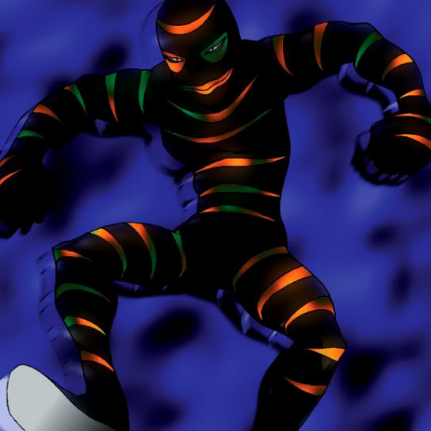

Doron

Description: "When this card is flipped face-up, adds another Doron face-up in own Summoning Area."
STATS
ATK: 900
DEF: 500DECK COST
Deck Cost per Card: 19EFFECT NOT IMPLEMENTED
Fusion List (21 Possible Fusions)
- Doron + Brave Scizzar = Cyber Soldier
- Doron + Candle of Fate = Charubin the Fire Knight
- Doron + Cyber Commander = Cyber Soldier
- Doron + Dancing Elf = Celtic Guardian
- Doron + Dark Gray = Tiger Axe
- Doron + Dark Plant = Bean Soldier
- Doron + Dharma Cannon = Cyber Soldier
- Doron + Fiend's Hand = Zombie Warrior
- Doron + Fire Reaper = Zombie Warrior
- Doron + Flame Snake = Charubin the Fire Knight
- Doron + Frenzied Panda = Tiger Axe
- Doron + Holograph = Cyber Soldier
- Doron + Magical Ghost = Armored Zombie
- Doron + Man Eater = Bean Soldier
- Doron + Mavelus = Flame Swordsman
- Doron + Muka Muka = Minomushi Warrior
- Doron + Prisman = Minomushi Warrior
- Doron + Tentacle Plant = Bean Soldier
- Doron + The Wandering Doomed = Zombie Warrior
- Doron + White Dolphin = Wow Warrior
- Doron + Zombie Warrior = Armored Zombie